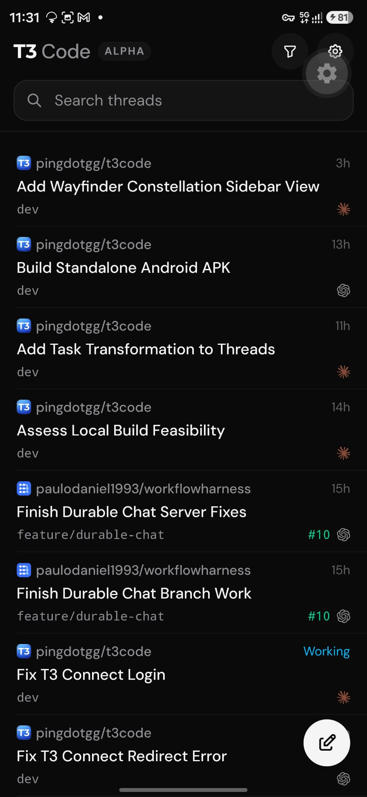

How tasks (real sub-threads — steerable, cancellable, durable) and their turns'
agents (provider-native, run inside the task's session — view only) surface in the
T3 Code mobile app. The chrome and thread list are traced from the real Android app; the
expanded tasks/agents rows follow the desktop sidebar's accepted visual language
(disclosure chips, guide-line sub-rows, ✓/× turn counters, ↩ returned markers). Sibling
mockups: ../thread-tasks-mockups/, ../subagent-view-mockups/.

References.reference-mobile.png — the real Android app (dark):
status bar, "T3 Code · ALPHA" header with filter/settings buttons, "Search threads",
hairline-separated thread rows, compose FAB. Second reference (not embeddable): the
desktop/web sidebar's expanded tasks/agents UI — parent row with clock + "✓ Settle"
pill, "⌄ 1 task · 10 agents" disclosure chip, blue-asterisk task rows, a task's
"› Latest turn · 10 agents" row with green ✓ 6 / red × 4 counters and a blue ↩
returned marker.
The app's real thread list. Expanded parent rows gain a clock + ✓ Settle pill
and a disclosure chip ("⌄ 1 task · 10 agents"); sub-rows nest thread → tasks → a
task's turn → that turn's agents under a guide line, with blue-asterisk (working),
✓ (done), chevron (expandable), ↩ (returned) markers and ✓/× turn counters. Deep link
?peek=task|turn|apk|local|login highlights a row.
Tapping a task row slides up a glass bottom sheet: status, chips, prompt, latest
activity, the task's turn with its agents (✓ 6 × 4), Cancel, an enabled steer
composer, "Open thread". An agent's sheet keeps the same anatomy but disables the
composer with the reason in words and swaps in "Show in transcript". Deep link
?sheet=task|apk|local|login|a4 (a4 is a failed agent).
The task thread's feed: a provenance event row, the turn's agent card (10
agents, ✓ 6 × 4) inline in the conversation, and a collapsible Parallel work
card pinned above the composer. Agent rows are view only — tapping one scrolls the
feed and flashes its card row. Deep link ?open=1 expands the card.
Navigation-stack honesty: a task opens as a normal pushed thread view (own transcript,
steer composer, parent as back target); the parent thread gains a Chat / Agents
segmented control, where Agents lists the 10 agents read-only, grouped under their
task's turn, each linking "Show in transcript". Deep links
?view=parent|task and ?tab=chat|agents.
file:// — no server, no build, no
dependencies. Per-variant trade-offs, recommendations, and the data-gap analysis are in
README.md and each option's NOTES.md;
HANDOFF.md is the planning input.